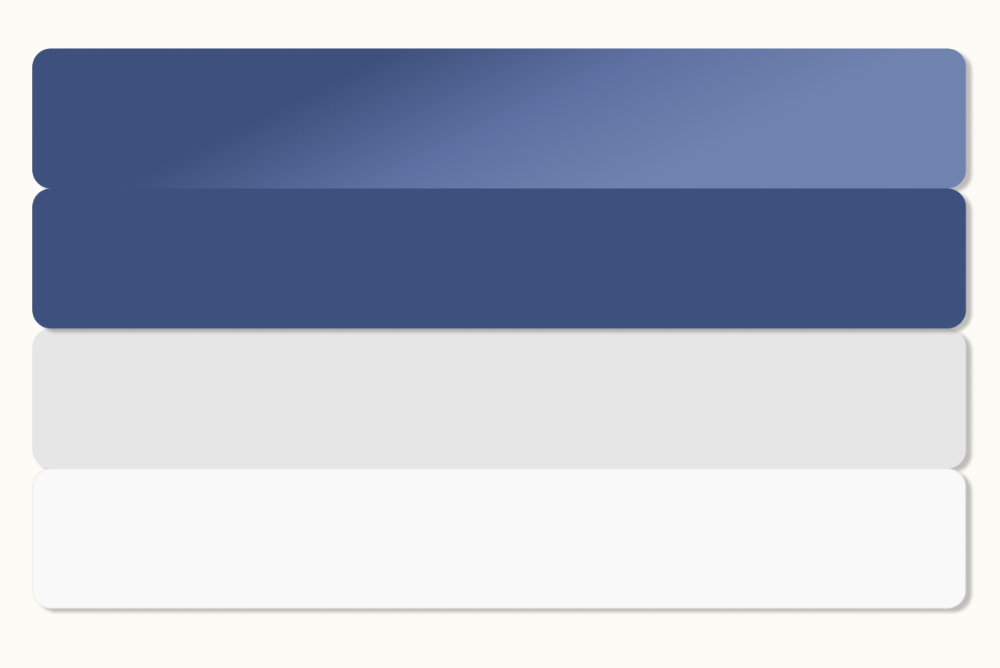

Innledning
Ny Craigslist er en eksamensoppgave som gjennomført andre semester innen faget Visualisering.
Oppgaven var å forbedre Craigslist, og gjøre den mer brukervennelig.
Nettsiden er en prototype som ble utviklet i Figma.
Tidligere hadde jeg hatt faget webutvikling, der målet var å lage en nettside for en fiktiv restaurant.
Fra det faget tok jeg med meg mye erfaringen om hvor viktig det er å ha et godt rammeverk og en god prosess.
Målet mitt med oppgaven var å lage en mer brukervennelig Craigslist.
Den skulle bli mer estetisk, men fortsatt beholde noe av integriteten av den gamle.
Prosess
Jeg startet designprossesen med å utforske Craigslist sin visuelle profil. Den visuelle profilen er kort foralt et enkelt og minimalistisk design som har vært uendring gjennom årene. Craigslist er et kjent varemerket for mange (i USA), og jeg ville derfor beholde mye av essensen; enkel og minimalistisk.
Videre gikk jeg gjennom Craigslist nåværende design og kartla utfordringene knyttet til dette.
Farge
Fargebruken til Craigslist er begrenset til hvitt, grått og blått. Dette ville jeg beholde i min versjon for å fortsatt gjøre den gjenkjennelig. Dog, har fargene andre nyanser, for å gjøre den mer tilltalende for brukere. 
Resultat
Utfordringene tok jeg med meg i resultatet, for å gjøre den så brukervennelig som mulig, samtidig som den ser mer estetisk talltalende.